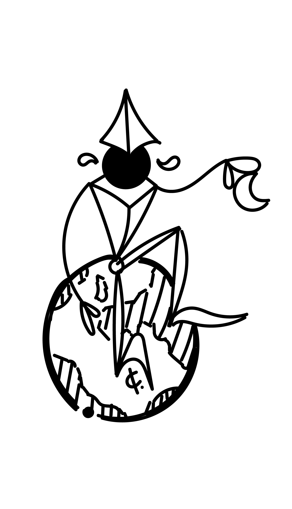

Challenges
Lab 6 had us declare an array and an object, reference elements of each and create a script output for an html page. We did so by starting in chrome, moving our work to atom and finally we ran the script on a template html/css web page.
Problems
This lab ran without any issues and we completed every task with no resistence. We attribute this to having so much time to work on it and it really helped when it came to our work meetings.
Results
We have an array and an object set in a javascript file and then we have the output displayed in our html page below. All together this was a simple lab but we are really just thankful we payed attention in lecture so that setting these two variables was a breeze.
Script Output
